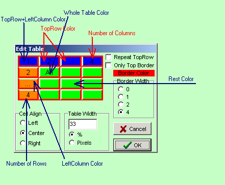
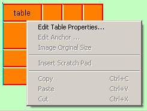
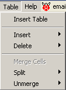
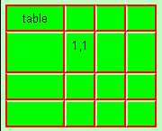
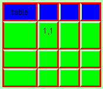
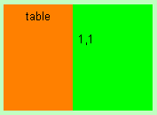
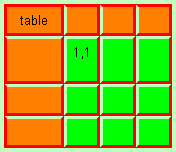
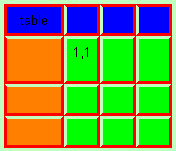
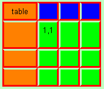

December 2004
Tables
Creating a new table
|
|
Create a new table (with the same properties as the last edited table). This can also be done through the main menu. In both cases the table-dialog will appear. |
Table-Dialog
The table-dialog shows a 4*4 table, where all cells have a special meaning when clicked on, see the figure below.
The table is shown on the same background color as the current document background color.
On creating a new table, the table-dialog will show up with the parameters last used.
When editing an existing table, number of rows and columns can not be changed in the table-dialog. Instead the main menu should be used to add or remove columns or rows at the specified locations.

Editing an existing table
With RightMouse clicking on a cellborder or with the caret just before or after a table, you get
a popup that let's you show the table dialog window. The table dialog is the same as on creating a new table, but not all properties can be changed.
For changing number of rows, number of columns, merging, unmerging / splitting the main table menu should be used.
 
Some examples
Here are some examples that can be created directly through the table dialog.
The light green, "missing borders" at the top and/or left of some cells, are due to the editor and are not visible in a normal webbrowser.
  
  
Key navigation in tables
For easy navigation some keys have special meaning when editing in a table cell
Creating table with identical properties
Every new table you create from now on, has these properties (even after closing PuntHoofd), until you change the properties or edit a table with different properties.